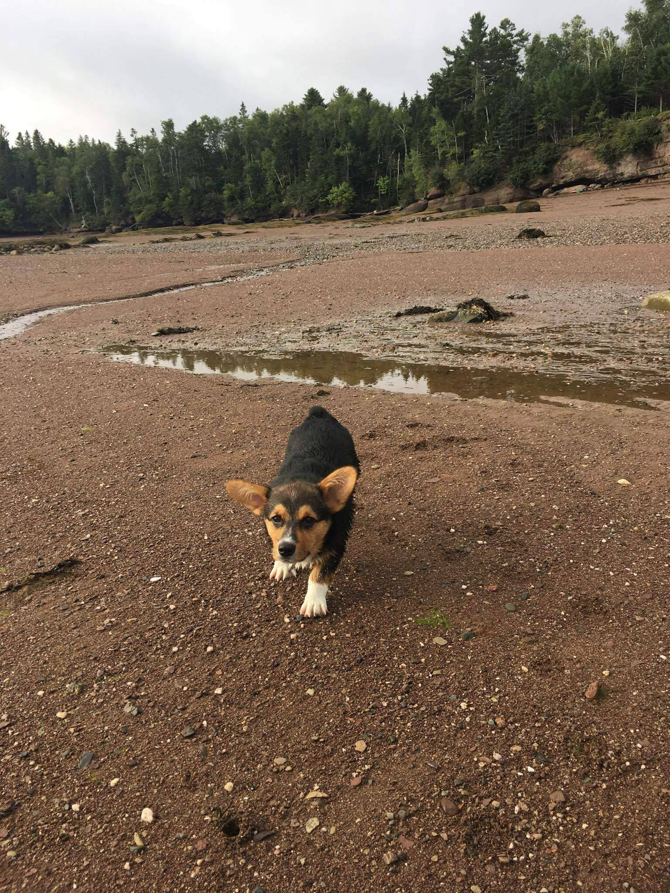
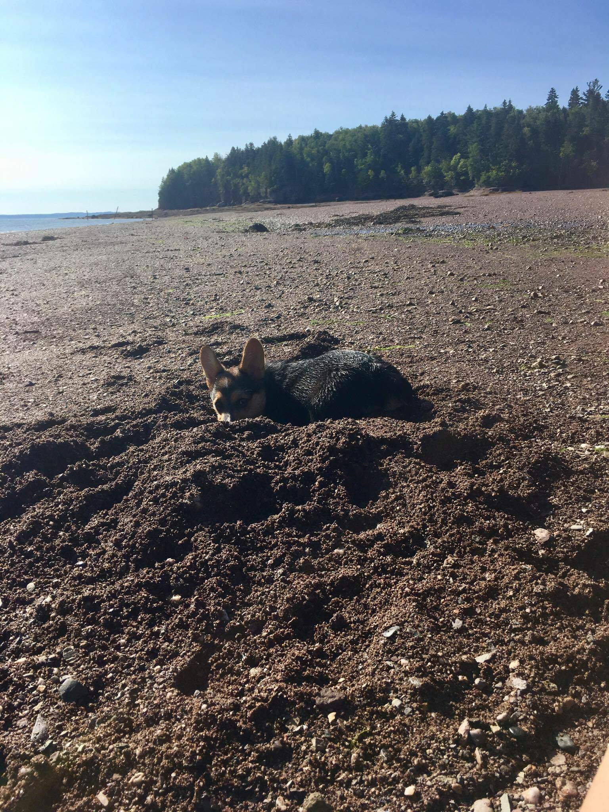

I got to go to the lake with my cousin Jack. Jack loves to play in the water. I loved to run on the shore and bark at Jack while he swam further out.
Before this picture was taken, I had just finished digging a hole big enough for me to lay in! But then Jack ran through my hole and ruin it. So in this picture I was running back to my humans to tell on Jack.
Aside from digging holes, my second favorite part of the Cove is all of the seaweed. There is so much seaweed everywhere. Some times the waves would get so high that there would even be seaweed in the trees. I loved running through the piles of seaweed and digging myself a bed to lay in.